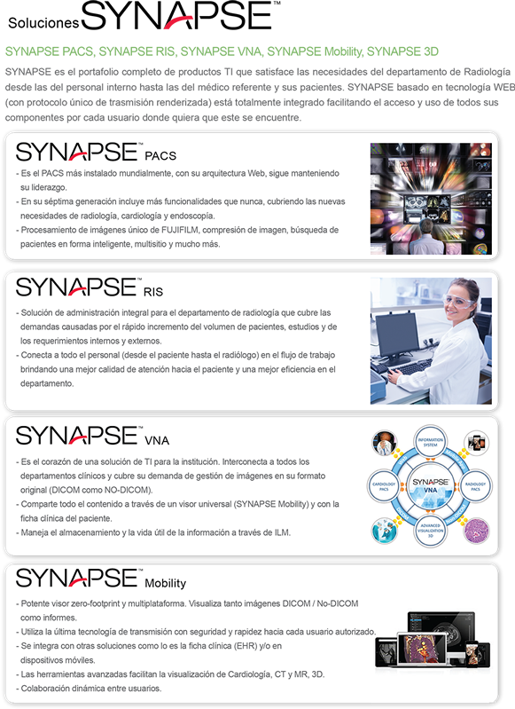

Synapse

DESCRIPCIÓN:
Synapse Enterprise es la respuesta a los retos de disponibilidad, calidad de imagen y conectividad que requieren los médicos hoy en día.
Hemos revolucionado la administración de los servicios en imagenología, soportando un diagnóstico rápido de alta calidad, numerosas herramientas y funcionalidades de procesamiento y fácil operación, proporcionando nuevas e interesantes posibilidades en este campo de rápida evolución médica.
SYNAPSE PACS es el primer sistema integral basado en web, el cual utiliza la mejor tecnología de compresión Wavelet a través del Fujifilm AON© (Access Over Network) permitiendo generar planes de compresión bajo demanda y acceder de forma rápida y fácil a las imágenes desde cualquier ubicación.
Synapse Server trabaja bajo un licenciamiento en proyección a la cantidad de estudios generados en una misma instalación.
La estación de trabajo de Synapse es el software de visualización para múltiples modalidades de sistema PACS de Fujifilm. La estación de trabajo de Synapse proporciona la visualización, manipulación e integración de los datos radiológicos incluyendo imágenes, informes, datos del paciente y la información clínica proveniente de las diferentes especialidades.
Asimismo, provee la integración de información clínica y datos demográficos del paciente desde la misma sesión de trabajo y aplicación, además de diversos sistemas clínicos incluyendo los sistemas de reconocimiento de voz, RIS (Radiology Information System), HIS (Hospital Information System) y aplicaciones de procesamiento de 3 dimensiones.
CARACTERÍSTICAS:
• Acceso sobre demanda.
• Arquitectura escalable.
• Tecnología web integrada.
• Interfaz de usuario consistente.
Sistemas Adicionales:
- RIS.
- 3D.
- MOBILITY.
- VNA.
- PACS.
DATOS COMPLEMENTARIOS: En FUJIFILM de México queremos convertirnos en su mejor aliado, es por eso que estamos comprometidos con nuestros clientes y ofrecemos el mejor servicio posventa.
FUJIFILM DE MÉXICO, S.A. de C.V.
Teléfono: (55) 5263-5500
e-mail: imagenologia@fujifilm.com.mx
www.fujifilm.com.mx